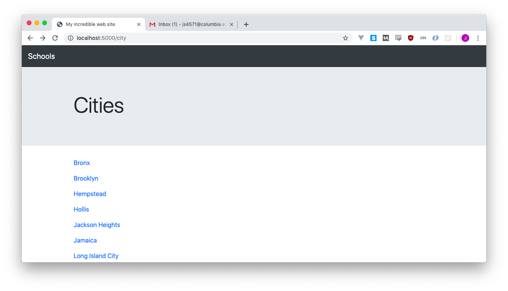

6 Leveling up with advanced SQLAlchemy queries
Okay, these might not be advanced, but there’s going to help us a lot.
6.1 Listing all of our cities
First, it isn’t going to do us much good to say “hey, browse by cities!” if we don’t let everyone know what the options are for cities.
The code below selects all of the distinct city column values from the School model, and then lets us view them. AFter you add the route and cities.html (below), you can see it at work if you visit http://localhost:5000/city.
@app.route('/city')
def city_list():
# Get the unique city values from the database
cities = School.query.with_entities(School.city).distinct().all()
# They're in a weird list of one-element lists, though, like
# [['Yonkers'],['Brooklyn'],['Manhattan']]
# so we'll take them out of that
cities = [city[0] for city in cities]
return render_template("cities.html", cities=cities)Documentation for Flask-SQLAlchemy is… not ideal, I found out how to do the distinct-columns thing here
Your cities.html should look like this:
<!doctype html>
<html>
<head>
<title>Schools</title>
<link rel="stylesheet" href="https://stackpath.bootstrapcdn.com/bootstrap/4.3.1/css/bootstrap.min.css" crossorigin="anonymous">
</head>
<body>
<nav class="navbar navbar-expand-lg navbar-dark bg-dark">
<a class="navbar-brand" href="#">Schools</a>
</nav>
<div class="jumbotron">
<div class="container">
<h1 class="display-4">Cities</h1>
</div>
</div>
<div class="container">
{% for city in cities %}
<p>{{ city }}</p>
{% endfor %}
</div>
</div>
</body>
</html>There we go, all of our cities listed out on a nice page, ready to go.

Of course we’d like to have them printed out nicely (not ALL CAPS LIKE THAT), and each city name link ot the page of schools. To add that, we’ll adjust our {{ city }} disply a little bit.
{% for city in cities %}
<p><a href="/city/{{ city }}">{{ city.title() }}</a></p>
{% endfor %}6.1.1 Cleaning text in our Jinja2 templates
If you click a few of the links, you’ll notice that it’s sending everyone to /city/YONKERS and /city/STATEN ISLAND. We didn’t spend so much time letting /city/yonkers and /city/staten-island work to give up and let this happen!
Our fix is ugly, but it works:
<p><a href="/city/{{ city.lower().replace(' ', '-') }}">{{ city.title() }}</a></p>6.1.2 No wait, maybe not!
You might notice that “New York” appears twice in our list. It’s because sometimes it’s NEW YORK in our database, while sometimes it’s New York. We could edit our database and fix it, but it’s usually easy to just handle bad data elegantly and remove them in our app.
Usually to remove duplicates, you’d use something like list(set(cities)), which is code that everyone blindly uses without understanding it. But hey, it doesn’t matter if you understand it: it removes duplicates!
The problem with this code is it only removes exact matches, and since one city is NEW YORK and one is New York it won’t work just yet. We need to standardize first, then remove duplicates. So our app.py gets edited as such:
@app.route('/city')
def city_list():
# Get the unique city values from the database
cities = School.query.with_entities(School.city).distinct().all()
# ...more notes I'm hiding...
# Convert to titlecase while we're pulling out of the weird list thing
cities = [city[0].title() for city in cities]
# Now that they're both "New York," we can now dedupe and sort
cities = sorted(list(set(cities)))
return render_template("cities.html", cities=cities)And, if you noticed, we sorted them while we were at it! Beautiful work. What a nice page.
6.1.3 Doing the same for ZIP codes
I trust that we can do this without guidance now! You need new route and a new template.